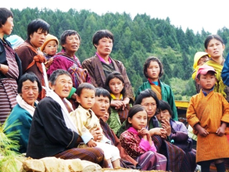
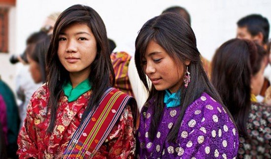

HISTORIA
Poco se sabe de la historia de Bután antes del siglo 17. El budismo fue introducido originalmente de la India en el siglo octavo, aunque el budismo de Bután de hoy es mucho tibetano en el carácter. Los antepasados de los Bhotes (o Bhotias) llegó desde el Tíbet, probablemente en el siglo noveno, cuando los tibetanos invadieron la zona y encontraron poca resistencia de la tribu indígena Tephu. En la mitad del siglo XV, Shabdung Ngawang Nangyal, un lama tibetano ejercer el poder temporal y espiritual, el país se unieron y construyeron la mayor parte de las aldeas fortificadas (dzongs). Sus sucesores en el poder establecido un sistema dual, que separa el gobernante temporal (Desi raja o deb) y el líder espiritual (Je Khempo o raja dharma).
El primer contacto registrado con Occidente ocurrió en 1772, cuando la British East India Company evitó una invasión de Bhután del Principado de Cooch Behar en la India, llegaron a la conclusión de un tratado de paz de dos años más tarde. Durante el siglo 18 y la mayor parte de los esfuerzos de 19, para abrir el comercio británico con Bután resultaron inútiles, con los butaneses con frecuencia atacan las zonas relativamente nivel de Assam y Bengala a lo largo de su frontera sur. En 1865, los británicos finalmente derrotaron a los butaneses y Bután aceptado formalmente un subsidio británico de r50, 000 al año, lo que dependía de su mantenimiento de la paz.
Con la aprobación británica, Ugyen Dorji Wangchuk se convirtió en el primer rey hereditario en 1907, en sustitución del gobernante temporal. En 1910, el Tratado de Punakha fue concertado entre el Gobierno británico en la India y Bután, en el que la India británica acordaron explícitamente a no inmiscuirse en los asuntos internos butaneses, Bután, mientras que aceptó británico "orientación" en el manejo de los asuntos exteriores-un papel independiente de la India asumió después de 1947. Un oficial del Indo-butanés acuerdo concluido en 1949, reafirmó y amplió el anterior Tratado de Punakha. Además de aumentar el subsidio anual de Bután a r500, 000 y volver a Bután 83 kilómetros cuadrados (32 millas cuadradas) de territorio alrededor de Dewangiri (arrebatado por los británicos en 1865), hizo la India responsable de la defensa de Bután y las comunicaciones estratégicas, comprometiéndose la India para evitar la interferencia en los asuntos de Bután y la afirmación de un acuerdo de Bután de ser "guiados por el consejo de" India en los asuntos exteriores.
En 1959, China publicó los mapas de la frontera del Himalaya con el sur de Asia que se mostró como parte de China del territorio reclamado por Bután, los representantes chinos afirmaron también que Bután pertenecía a una mayor Tibet. En respuesta, el primer ministro indio Jawaharlal Nehru advirtió que un ataque a Bután sería considerado un acto de guerra contra la India. Los enfrentamientos entre la India y China en las regiones fronterizas vecinas en el otoño de 1962 no violó las fronteras de Bután, a pesar de los sobrevivientes de las unidades del ejército indio diezmado al este de Bután dispersaron a la India a través de Bután.
En abril de 1964, el largo tiempo el primer ministro, Jigme Dorji, fue asesinado, dejando al descubierto las fisuras entre la élite gobernante. Los conspiradores que fueron capturados fueron ejecutados, entre ellos el comandante adjunto del ejército, otros huyeron a Nepal. En la década de 1960, el avance hacia la modernización de Bután y el fin de su aislamiento, se aceleraron los planes económicos elaborados y suscritos por la India.
Las relaciones con Nepal han crecido difícil en los últimos años, debido a una disputa con Nepal en relación con los refugiados butaneses de origen nepalí. La mayoría hindú "butaneses de Nepal", que comprende aproximadamente un tercio de la población de Bután, obtuvieron la ciudadanía en 1958. Sin embargo, Bután cambió sus leyes de ciudadanía en la década de 1980, por lo que los inmigrantes ilegales nepalí de Bhután. En 1990, el gobierno butanés expulsados 100.000 butaneses de Nepal, que huyeron a los campamentos de refugiados en el este de Nepal. En 1993, Bután y Nepal estableció un Comité Ministerial Conjunto de nivel (JMLC) para abordar la cuestión de los refugiados de etnia nepalí.


volver